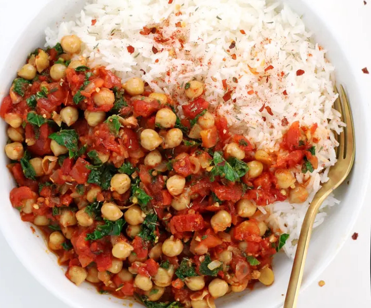

Chickpea stew
Smokey & Spicy!!!

Ingredients
Chickpeas
Chopped spinach
Canned diced tomato
Rice or quinoa
Yellow onion
Minced garlic
Olive oil
Salt
Smoked paprika
Thyme
Sugar
Red pepper flakes
A meal that makes the perfect fit for a cold day with an empty stomach!
Instructions
- Heat the oil in a large pot or high-sided skillet. When hot, add the onion and garlic and sauté for about 5 minutes until the onion turns transluecent and begins to brown
- Stir in the tomatoes, smoked paprika, crushed chili flakes, dried thyme, sugar, and salt. Continue to cook, stirring often, for 10 - 15 minutes until the tomates have cooked and darkend in color
- Mix in the chickpeas and kale and cook another few minutes until heated through and the kale wilts into the sauce. Serve hot over cooked grain of choice
Tips
Skip the olive oil and do a water or broth sauté instead
Chickpeascan be substituted with an equal amount of another type of bean
if you do not like spice you may omit the crushed chili flakes
Link to original recipe